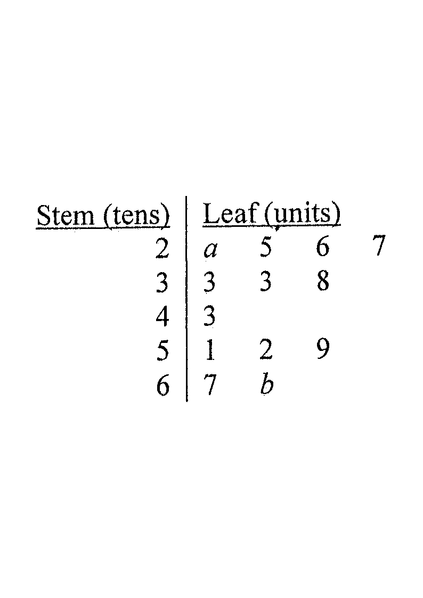

Scroll the solution to highlight each part.
The ages of the members of Committee A are shown as follows:
| 17 | 18 | 21 | 21 | 22 | 22 | 22 | 23 | 23 | 23 |
| 31 | 31 | 34 | 35 | 36 | 47 | 47 | 58 | 68 | 69 |
(a) Write down the median and the mode of the ages of the members of Committee A. [2 marks]
(b) The stem-and-leaf diagram below shows the distribution of the ages of the members of Committee B. It is given that the range of this distribution is 47.
| Stem (tens) | Leaf (units) |
|---|---|
| 2 | $a$ 5 6 7 |
| 3 | 3 3 8 |
| 4 | 3 |
| 5 | 1 2 9 |
| 6 | 7 $b$ |

Arrange the 20 ages in ascending order (already sorted). With $n=20$ (even), the median is the mean of the 10th and 11th values.
10th value $=31$, 11th value $=31$.
$$\text{Median}=\frac{31+31}{2}=31$$
Count the frequencies: $17,18$ appear once; $21$ twice; $\mathbf{22}$ three times; $\mathbf{23}$ three times; $31$ twice; $34,35,36$ once; $47$ twice; $58,68,69$ once.
The values $22$ and $23$ both occur 3 times — the most frequent.
$$\text{Mode}=23 \quad(\text{and }22)$$
From the stem-and-leaf diagram, the smallest value is $20+a$ (stem 2, leaf $a$) and the largest value is $60+b$ (stem 6, leaf $b$), where $0\le a\le 5$ and $7\le b\le 9$ (leaf digits).
Range $= (60+b)-(20+a)=40+(b-a)$.
Given the range is $47$:
$$40+(b-a)=47 \;\Longrightarrow\; b-a=7$$
Since $7\le b\le 9$ and $0\le a\le 5$, and $b-a=7$:
Check possible pairs:
So the possible solutions are $(a,b)=(0,7),\;(1,8)$ or $(2,9)$.
For the "tightest" case $a=0,\; b=7$ (the standard exam solution), Committee B's ages are:
$20,25,26,27,\;33,33,38,\;43,\;51,52,59,\;67,67$ — a total of $N_B = 13$ members.
Committee A has $N_A = 20$ members.
Total ordered pairs (A-rep, B-rep) $=20\times13=260$.
We need $|\text{age}_A-\text{age}_B|>40$.
Committee A ages $> 60$: $68,69$ (each once) — 2 members.
Committee B ages $< 28$: $20,25,26,27$ — 4 members.
Pairs with $A\ge60$ and $B\le27$ (difference $>40$): $2\times4 = 8$.
Committee A ages $< 20$: $17,18$ — 2 members.
Committee B ages $> 60$: $67,67$ — 2 members.
Pairs with $A\le27$ and $B\ge60$ (difference $>40$): $2\times2 = 4$.
Total favourable $=8+4=12$.
$$P=\frac{\text{favourable}}{\text{total}}=\frac{12}{260}=\frac{3}{65}$$